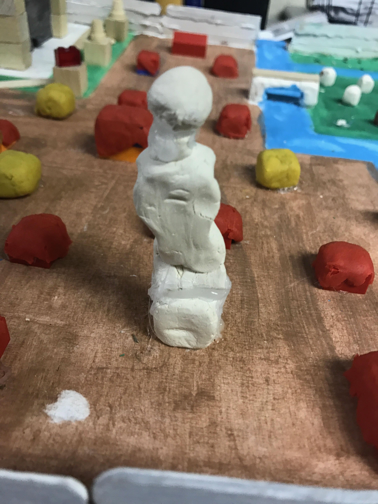

Sunny the daughter of Eudora, grew up in a field of sunflowers, hence her name. Sunny loved the fields, she created sunflower houses, sunflower bed and crowns. She lived in the field from sunrise to sunset, because she didn’t quite enjoy home with her siblings and mother leaving her as an outcast, she found the fields a much better place to go. “SUNNY!” Eudora, sunny’s mother yelled. Eudora ran down the steps to the lake where she found her mother. “Yes mother.” she answer “I don’t want you ever going to the rubbish sunflowers ever again.” “But why?” she asked her mother yelled at her once again. Sunny still, did not understand her mother’s sudden outburst. She sighed agreeing her mother. Sunny sat at her window bay that afternoon, bored out of her mind, until she heard noises, like crashing waves. She looked out her window and saw that the city was flooded, she knew her mother had something to do with this. Is this why she didn’t want me going out there, anymore? She cried when she noticed the field of sunflowers was know a mudding yellow puddle. This happened twice a year. Every year, she would sit on her window bay and watch two floods ruin what she used to call her land.
One night, she felt really sad so she snuck out of her house and went to the Sunflower field, when walking to the sunflower field she realized her mother would be up soon and realize that she was missing. She made her way to the fields as fast as she could, when she got there she looked for the sunflower bed she made long along. She couldn’t find it, she couldn’t believe her mother would do such a thing. She got down on her knees with a bundle of sunflowers and cried, how could her mother be so cruel, why would her mother flood the land. So many questions roaming through her head that she didn’t notice the water coming towards her…. Sunny died in the flood, holding her bundle of sunflowers. Now she is remembered everyday after the floods, next to her statue where she is holding the sunflowers.